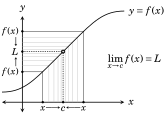
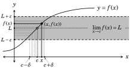
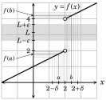
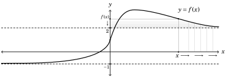
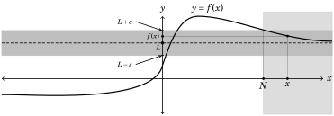
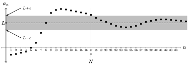

Chapter 13 Proofs in Calculus
The proofs we have dealt with so far in this text have been largely proofs about integers, or about structures related to integers (divisibility, congruence modulo n, sets of integers, relations among integers, functions of integers, etc.).
Of course mathematics is not restricted to just integers. Calculus is built on the system of real numbers ℝ. Thus the main definitions in calculus cater to ℝ. Consequently the proofs in calculus (which use the definitions) have a distinct flavor that is quite different from proofs in other areas of mathematics. In reading and writing proofs in calculus you will still use the main proof techniques (direct, contrapositive, contradiction), but it can take some time to adjust your thinking to the idiosyncrasies of ℝ. This chapter is intended to ease that adjustment. It is an introduction to some of the ideas you will encounter in later courses in advanced calculus (also called analysis). This chapter is not needed for the remainder of the text, so it can be skipped without a loss of continuity.
Single-variable calculus (the first two semesters of a standard calculus sequence) deals with functions f : ℝ → ℝ, or more generally f : X → ℝ for X ⊆ ℝ. Usually the2 domain X is an interval or a union of intervals. For example, f (x) = \(\frac{x^2+5}{(x-1)(x-2)}\) is a function f : (−∞,1) ∪ (1,2) ∪ (2,∞) → ℝ, whereas f (x) = \(\sqrt{x}\) has domain X = [0,∞), and f (x) = x2−x has domain X = (−∞,∞) = ℝ.
Calculus rests on the idea of a limit, and it is the limit that separates calculus from algebra and trigonometry. We will study limits in sections 13.2 through 13.6. It is assumed that you have had a prior course in calculus and already have some experience with limits. But our present treatment is more theoretical. It serves the double purpose of putting your earlier work on a firmer foundation while preparing you for more advanced studies.
Another calculus topic (typically from the second semester of a standard course) concerns sequences and series, where functions f : ℕ → ℝ play a major role. We will turn to this in sections 13.7 and 13.8.
All of this requires a result called the triangle inequality, so we begin there.
13.1 The Triangle Inequality
Definitions in calculus and analysis use absolute value extensively. As you know, the absolute value of a real number x is the non-negative number
x if x ≥ 0
|x| =
−x if x < 0.
Fundamental properties of absolute value include |xy| = |x|·|y| and x ≤|x|. Another property—used often in proofs—is the triangle inequality:
Theorem 13.1 (Triangle inequality) If x, y, z ∈ ℝ, then |x− y| ≤|x− z|+|z− y|.
Proof. The name triangle inequality comes from the fact that the theorem can be interpreted as asserting that for any “triangle” on the number line, the length of any side never exceeds the sum of the lengths of the other two sides. Indeed, the distance between any two numbers a, b ∈ ℝ is |a − b|. With this in mind, observe in the diagrams below that regardless of the order of x, y, z on the number line, the inequality |x − y| ≤|x − z|+|z − y| holds.
|x−y| |z−y| |x−y| |x−z| |x−z| |x−y|
|x−z| |z−y| |z−y| |x−z| |z−y| |x−y|
(These diagrams show x, y, z as distinct points. If x = y, x = z or y = z, then |x − y| ≤|x − z|+|z − y| holds automatically.) ■
The triangle inequality says the shortest route from x to y avoids z unless z lies between x and y. Several useful results flow from it. Put z = 0 to get
|x − y| ≤|x|+|y| for any x, y ∈ ℝ. (13.1)
Replacing the y in this inequality with −y gives
|x + y| ≤|x|+|y| for any x, y ∈ ℝ. (13.2)
Also, by the triangle inequality, |x − 0| ≤|x − (−y)|+|− y − 0|, which yields
|x|−|y| ≤|x + y| for any x, y ∈ ℝ. (13.3)
The three inequalities (13.1), (13.2) and (13.3) are very useful in proofs.
13.2 Definition of a Limit
Limits are designed to deal with the following type of problem: We need to know how a certain function f (x) behaves when x is close to some number c. Perhaps f (c) is not even defined, so the graph of f looks something like what is shown below; a curve with a hole at a point (c, L).

In this picture, for any x ≠ c, the corresponding value f (x) is either greater than L or less than L. But the closer x is to c, the closer f (x) is to L, as illustrated on the right. We express this as\(\lim_{x\to c}\) f (x) = L. That is, the symbols \(\lim_{x\to c}\) f (x) stand for the number that f (x) approaches as x approaches c.
Your calculus text probably presented an informal, intuitive definition of a limit that likely went something like this.
Definition 13.1 (Informal definition of a limit) Suppose f is a function and c is a number. Then \(\lim_{x\to c}\) f (x) = L means that f (x) is arbitrarily close to L provided that x is sufficiently close to c.
The idea is that no matter how close we want to make f (x) to L, we can be assured that it will be that close (or closer) if x is close enough to c.
Definition 13.1 is sufficient for the first few semesters of calculus, but it is not adequate for deeper, more rigorous investigations. The problem is that it is too vague. What, exactly, is meant by close? Saying x is “close” to c is not much better than saying that an integer n is “sort of even.” No proof can be done in the presence of such ambiguity.
So this section’s first task is to motivate and develop a more rigorous and precise limit definition, the one used in advanced calculus. Achieving this goal forces us to grapple with the imprecise term close. What do we mean by close? Within 0.1 units? Within 0.001 or 0.00001 units, or even closer? We will make the definition precise by introducing a numeric, quantitative measure of closeness.
Standard practice uses the Greek letters ε (epsilon) and δ (delta) for variables representing how close f (x) is to L, and x is to c. For instance, x is within a distance of δ from c if and only if c − δ < x < c + δ, that is, −δ < x − c < δ, or |x − c| < δ. So for any real number δ > 0 (no matter how small) the statement |x − c| < δ means that x is within δ units from c.
δ δ
Likewise |f (x) − L| < ε means that f (x) is within ε units from L. Let’s apply these ideas to Definition 13.1, and transform it line by line.
Informal definition Precise definition
\(\lim_{x\to c}\) f (x) = L means that \(\lim_{x\to c}\) f (x) = L means that
f (x) is arbitrarily close to L for any ε > 0, |f (x) − L| < ε
provided that provided that
x is sufficiently close to c 0 < |x − c| < δ for some δ > 0.
We have arrived at a precise definition of a limit.
Definition 13.2 (Precise definition of a limit) Suppose f : X → ℝ is a function, where X ⊆ ℝ, and c ∈ ℝ. Then \(\lim_{x\to c}\) f (x) = L means that for any real ε > 0 (no matter how small), there is a real number δ > 0 for which |f (x) − L| < ε provided that 0 < |x − c| < δ.
Figure 13.1 illustrates this. For any ε > 0, no matter how small, consider the narrow shaded band of points on the plane whose y-coordinates are between y = L − ε and y = L + ε. Given this ε, we can find another number δ > 0 such that the point (x, f (x)) is in the shaded band whenever x is within δ units from c. In other words, |f (x) − L| < ε provided that 0 < |x − c| < δ.

Figure 13.1. A graphic description of the limit definition.
Three comments are in order. First, we have slipped into Definition 13.2 the expression 0 < |x − c| < δ instead of |x − c| < δ. This is to rule out the possibility x = c, as f (c) may not be defined, depending of f and c.
Second, Definition 13.2 applies only if there is some δ > 0 for which (c − δ, c) ∪ (c, c + δ) is a subset of the domain of f . Otherwise the statement “|f (x)−L| < ε provided that 0 < |x−c| < δ” is meaningless for some x, no matter how small δ is. Thus \(\lim_{x\to c}\) f (x) makes sense only if f (x) is defined for all x ∈ ℝ that are “close to” c in the sense that x ∈ (c − δ, c) ∪ (c, c + δ) for some δ.
Third, in symbolic form Definition 13.2 says \(\lim_{x\to c}\) f (x) = L if and only if
∀ε > 0, ∃δ > 0, (0 < |x − c| < δ) ⇒ (|f (x) − L| < ε). (13.4)
Thus proving \(\lim_{x\to c}\) f (x) = L amounts to proving that Statement (13.4) is true.
One strategy for proving Statement (13.4) is the direct approach. Begin by assuming ε > 0. Then find a δ for which (0 < |x − c| < δ) ⇒ (|f (x) − L| < ε). To find δ, try to extract a factor of |x − c| from |f (x) − L|. If you can do this, inspection usually tells you how small |x− c| needs to be to make |f (x)−L| < ε.
We will use this strategy in Example 13.1, which proves (3x + 4) = 10. Here f (x) = 3x + 4 and L = 10, so |f (x) − L| is |(3x + 4) − 10|. Also |x − c| is |x − 2|.
Example 13.1 Prove that (3x + 4) = 10.
Proof. Suppose ε > 0. Note that |(3x + 4) − 10| = |3x − 6| = |3(x − 2)| = 3|x − 2|. So if δ =\(\frac{\varepsilon}{3}\), then 0 < |x − 2| < δ yields |(3x + 4) − 10| = 3|x − 2| < 3δ = 3\(\frac{\varepsilon}{3}\) = ε.
In summary, for any ε > 0, there is a δ =\(\frac{\varepsilon}{3}\) for which 0 < |x − 2| < δ implies |(3x + 4) − 10| < ε. By Definition 13.2, (3x + 4) = 10. ■
Example 13.2 Prove that \(\lim_{x\to 2}\) 5x2 = 20.
Proof. Suppose ε > 0. Notice that
|f (x) − L| = |5x2 − 20| = |5(x2 − 4)| = |5(x − 2)(x + 2)| = 5 ·|x − 2|·|x + 2|.
Now we have a factor of |x − 2| in |f (x) − L|, but it is accompanied with |x + 2|. But if |x − 2| is small, then x is close to 2, so |x + 2| should be close to 4. In fact, if |x − 2| ≤ 1, then |x + 2| = |(x − 2) + 4| ≤|x − 2| + |4| ≤ 1 + 4 = 5. (Here we applied the inequality (13.2) from page 245.) In other words, if |x − 2| ≤ 1, then |x + 2| ≤ 5, and the above equation yields
|f (x) − L| = |5x2 − 20| = 5 ·|x − 2|·|x + 2| < 5 ·|x − 2|· 5 = 25|x − 2|.
Take δ to be smaller than both 1 and \(\frac{\varepsilon}{25}\). Then 0 < |x − 2| < δ implies |5x2 − 20| < 25 ·|x − 2| < 25δ < 25\(\frac{\varepsilon}{25}\) = ε. By Definition 13.2, \(\lim_{x\to 2}\) 5x2 = 20. ■
The examples above (and the exercises below) involve limits that you probably regard as obvious. Our point is to illustrate Definition 13.2, not to compute difficult limits. Difficult limits come later (mostly in more advanced courses, not in this book) where Definition 13.2 will be used to great effect.
Exercises for Section 13.2
- Prove that \(\lim_{x\to 5}\)(8x − 3) = 37.
- Prove that \(\lim_{x\to -1}\)(4x + 6) = 2.
- Prove that \(\lim_{x\to 0}\)(x + 2) = 2.
- Prove that \(\lim_{x\to 8}\)(2x − 7) = 9.
- Prove that \(\lim_{x\to 3}\)(x2 − 2) = 7.
- Prove that \(\lim_{x\to 1}\)(4x2 + 1) = 5.
13.3 Limits That Do Not Exist
Given a function f and a number c, there are two ways that \(\lim_{x\to c}\) f (x) = L can be false. First, there may be a different number M ≠ L for which\(\lim_{x\to c}\) f (x) = M. Second, it may be that Statement (13.4) is false for all L ∈ ℝ. In such a case we say that \(\lim_{x\to c}\) f (x) does not exist. Contradiction is one way to prove that \(\lim_{x\to c}\) f (x) does not exist. Assume \(\lim_{x\to c}\) f (x) = L and produce a contradiction.
x x − 2|
Example 13.3 Suppose f (x) = + | + 2. Prove lim f (x) does not exist.
2 x − 2 x→2
Proof. Notice that f (2) is not defined, as it involves division by zero. Also, f (x) behaves differently depending on whether x is to the right or left of 2. If x > 2, then x − 2 is positive, so |x − 2| = x − 2 and\(\frac{|x-2|}{x-2}\) = 1, so f (x) =\(\frac{x}{2}\) + 3. If x < 2, then x−2 is negative, so |x−2| = −(x−2) and = −1, so f (x) =\(\frac{x}{2}\) +1.
\(\frac{1}{2}\) x + 3 if x > 2
Therefore f, graphed below, is a piecewise function f (x) = 1
\(\overline{2}\) x + 1 if x < 2.
y
Suppose for the sake of contradiction that

\(\lim_{x\to 2}\) f (x) = L, where L is a real number. Let ε = 1. By Definition 13.2, there is a real number δ > 0 for which 0 < |x − 2| < δ implies f (x) − L < 1. Put a = 2− \(\frac{\delta}{2}\), so 0 < |a−2| < δ. Hence f (a)−L < 1. Put b = 2+\(\frac{\delta}{2}\), so 0 < |b−2| < δ. Hence f (b)−L < 1. Further, f (a) < 2 and f (b) > 4, so 2 < |f (b) − f (a)|. With this and the help of the inequality (13.1), we get a contradiction 2 < 2, as follows: 2 < f (b) − f (a) = f (b) − L) − (f (a) − L ≤ f (b) − L+ f (a) − L < 1 + 1 = 2. ■
Our next limit is a classic example of a non-existent limit. It often appears in first-semester calculus texts, where it is treated informally.
(1)
Example 13.4 Prove that lim sin does not exist.
x→0 x
As x approaches 0, the number\(\frac{1}{x}\) grows bigger, approaching infinity, so sin\(\left(\frac{1}{x}\right)\) just bounces up and down, faster and faster the closer x gets to 0.
Intuitively, we would guess that the limit does not exist, because sin\(\left(\frac{1}{x}\right)\) does not approach any single number as x approaches 0. Here is a proof.
Proof. Suppose for the sake of contradiction that \(\lim_{x\to 0}\) sin\(\left(\frac{1}{x}\right)\) = L for L ∈ ℝ. Definition 13.2 guarantees a number δ for which 0 < |x − 0| < δ implies sin\(\left(\frac{1}{x}\right)\)− L <\(\frac{1}{2}\). Select k ∈ ℕ large enough so that \(\frac{1}{k\pi}\) < δ. As 0 < − 0 < δ, we have sin\(\left(\frac{1}{1/k\pi}\right)\)− L <\(\frac{1}{2}\), and this yields sin(kπ) − L = |0 − L| = |L| <\(\frac{1}{2}\).
Next, take ℓ ∈ ℕ large enough so that \(\frac{1}{\frac{\pi}{2}+2\ell\pi}\) < δ. Then 0 < −0 < δ, so we have sin \(\frac{1}{\frac{\pi}{2}+2\ell\pi}\) − L <\(\frac{1}{2}\), which simplifies to sin + 2ℓπ)−L = |1−L| <\(\frac{1}{2}\).
( ) 1 π 1
Above we showed |L| <\(\frac{1}{2}\) and |1 − L| <\(\frac{1}{2}\). Now apply the inequality (13.2) to get the contradiction 1 < 1, as 1 = L + (1 − L) ≤ L+ 1 − L <\(\frac{1}{2}\) +\(\frac{1}{2}\) = 1. ■
(1)
Example 13.5 Investigate lim xsin .
x→0 x
This is like the previous example, except for the extra x. Because sin\(\left(\frac{1}{x}\right)\) ≤ 1, we expect xsin\(\left(\frac{1}{x}\right)\) to go to 0 as x goes to 0. Indeed, we prove \(\lim_{x\to 0}\) xsin\(\left(\frac{1}{x}\right)\)= 0.
Proof. Given ε > 0, let δ = ε. Suppose 0 < |x − 0| < δ. Simplifying, |x| < δ, which is the same as |x| < ε. We get xsin\(\left(\frac{1}{x}\right)\)− 0 = xsin\(\left(\frac{1}{x}\right)\) = |x|· sin\(\left(\frac{1}{x}\right)\) < εsin\(\left(\frac{1}{x}\right)\) ≤ ε · 1 = ε. From this, Definition 13.2 gives \(\lim_{x\to 0}\) xsin\(\left(\frac{1}{x}\right)\)= 0. ■
One final point. We remarked on page 248 that for \(\lim_{x\to c}\) f (x) = L to make sense, there must be a δ for which f (x) is defined for all x ∈ (c −δ, c)∪(c, c +δ). Thus, for example, following Definition 13.2 to the letter, we have to say that \(\lim_{x\to 0}\sqrt{x}\) does not exist because \(\sqrt{x}\) is not defined for all x ∈ (−δ,0) ∪ (0,δ). Your calculus text probably introduced a right-hand limit \(\lim_{x\to 0^+}\)\(\sqrt{x}\) = 0. Though this notion is not programmed into our Definition 13.2, you may revisit such embellishments in later courses.
Exercises for Section 13.3
Prove that the following limits do not exist.
- \(\lim_{x\to 0}\)log10 |x|
- \(\lim_{x\to 0}\) \(\frac{|x|}{x}\)
- \(\lim_{x\to 0}\) \(\frac{1}{x^2}\)
- \(\lim_{x\to 0}\)cos\(\left(\frac{1}{x}\right)\)
- \(\lim_{x\to 0}\)xcot\(\left(\frac{1}{x}\right)\)
- \(\lim_{x\to 1}\) \(\frac{1}{x^2-2x+1}\)
13.4 Limit Laws
When you studied Calculus I your text presented a number of limit laws, such as\(\lim_{x\to c}\) f (x)g(x) = f (x))· g(x)). These laws allowed you to compute complex limits by reducing them to simpler limits, until the answer was at hand. But your calculus text probably did not prove the laws. Rather, you were asked to accept them as intuitively plausible (and useful) facts.
Using Definition 13.2, we now present proofs of some limit laws. This serves two purposes. First, it puts your knowledge of calculus on a firmer foundation. Second, it highlights various strategies and thought patterns that are useful in limit proofs, which come to bear in later courses and work.
The inequalities (13.1), (13.2) and (13.3) from page 245 play a crucial role. For convenience we repeat them here. For any x, y ∈ ℝ,
|x − y| ≤|x|+|y|, |x + y| ≤|x|+|y|, and |x|−|y| ≤|x + y|.
We will use these frequently, usually without comment.
Our first limit law concerns the constant function f (x) = a where a ∈ ℝ. Its graph is a horizontal line with y-intercept a. It should be obvious that \(\lim_{x\to c}\) f (x) = a for any real number c. Nonetheless, let’s prove this obvious fact.
Theorem 13.2 (Constant function rule) If a ∈ ℝ, then \(\lim_{x\to c}\) a = a.
Proof. Suppose a ∈ ℝ. According to Definition 13.2, to prove \(\lim_{x\to c}\) a = a, we must show that for any ε > 0, there is a δ > 0 for which 0 < |x − c| < δ implies |a−a| < ε. This is almost too easy. Just let δ = 1 (or any other number). Then |a − a| < ε is automatic, because |a − a| = 0. ■
The identity function f : ℝ → ℝ is f (x) = x. Next we prove \(\lim_{x\to c}\) f (x) = c.
Theorem 13.3 (Identity function rule) If c ∈ ℝ, then \(\lim_{x\to c}\) x = c.
Proof. Given ε > 0, let δ = ε. Then 0 < |x − c| < δ implies |x − c| < ε. By Definition 13.2, this means \(\lim_{x\to c}\) x = c. ■
Theorem 13.4 (Constant multiple rule) If \(\lim_{x\to c}\) f (x) exists, and a ∈ ℝ, then \(\lim_{x\to c}\) af (x) = a\(\lim_{x\to c}\) f (x).
Proof. Suppose \(\lim_{x\to c}\) f (x) exists. We must show \(\lim_{x\to c}\) af (x) = a\(\lim_{x\to c}\) f (x). If a = 0, then this reduces to \(\lim_{x\to c}\) 0 = 0, which is true by Theorem 13.2. Thus, for the remainder of the proof we can assume a ≠ 0.
Suppose \(\lim_{x\to c}\) f (x) = L. We must prove \(\lim_{x\to c}\) af (x) = aL. By Definition 13.2, this means we must show that for any ε > 0, there is a δ > 0 for which 0 < |x − c| < δ implies af (x) − aL < ε. Let ε > 0. Because \(\lim_{x\to c}\) f (x) = L, there exists a δ > 0 for which 0 < |x− c| < δ implies f (x)− L <\(\frac{\varepsilon}{|a|}\). So if 0 < |x− c| < δ, then af (x) − aL = a(f (x) − L = |a|· f (x) − L < |a|\(\frac{\varepsilon}{|a|}\) = ε.
In summary, we’ve shown that for any ε > 0, there is a δ > 0 for which 0 < |x − c| < δ implies af (x) − aL < ε. By Definition 13.2, \(\lim_{x\to c}\) af (x) = aL. ■
Theorem 13.5 (Sum rule) If both \(\lim_{x\to c}\) f (x) and \(\lim_{x\to c}\) g(x) exist, then \(\lim_{x\to c}\) (f (x) + g(x)) =\(\lim_{x\to c}\) f (x) +\(\lim_{x\to c}\) g(x).
Proof. Let \(\lim_{x\to c}\) f (x) = L and \(\lim_{x\to c}\) g(x) = M. We must prove f (x) + g(x)) = L + M. To prove this, take ε > 0. We need to find a corresponding δ for which 0 < |x− c| < δ implies f (x)+ g(x))−(L+ M) < ε. With this in mind, notice that
f (x) + g(x)) − (L + M) = f (x) − L) + (g(x) − M
≤ f (x) − L+ g(x) − M. (A)
As \(\lim_{x\to c}\) f (x) = L, there is a δ′ > 0 such that 0 < |x − c| < δ′ implies f (x) − L <\(\frac{\varepsilon}{2}\). As g(x) = M, there is a δ′′ > 0 such that 0 < |x−c| < δ′′ implies g(x)−M <\(\frac{\varepsilon}{2}\). Now put δ = min{δ′,δ′′}, meaning that δ equals the smaller of δ′ and δ′′. If 0 < |x − c| < δ, then (A) gives f (x) + g(x)) − (L + M) ≤ \(\frac{\varepsilon}{2}\) +\(\frac{\varepsilon}{2}\) = ε.
We’ve now shown that for any ε > 0, there is a δ > 0 for which 0 < |x− c| < δ implies f (x) + g(x)) − (L + M) < ε. Thus \(\lim_{x\to c}\) (f (x) + g(x)) = L + M. ■
Theorem 13.6 (Difference rule) If both \(\lim_{x\to c}\) f (x) and \(\lim_{x\to c}\) g(x) exist, then \(\lim_{x\to c}\) (f (x) − g(x)) = f (x) − \(\lim_{x\to c}\) g(x).
Proof. Combining the sum rule with the constant multiple rule gives
\(\lim_{x\to c}\) (f (x) − g(x)) =f (x) + (−1) · g(x)) = f (x) +\(\lim_{x\to c}\)(−1) · g(x)
= f (x) + (− g(x) =\(\lim_{x\to c}\) f (x) − \(\lim_{x\to c}\) g(x). ■
Theorem 13.7 (Multiplication rule) If both \(\lim_{x\to c}\) f (x) and \(\lim_{x\to c}\) g(x) exist, then \(\lim_{x\to c}\) f (x)g(x) = f (x)) · g(x)).
Proof. Let \(\lim_{x\to c}\) f (x) = L and g(x) = M. We must prove f (x)g(x) = LM. To prove this, take ε > 0. We need to find a corresponding δ for which 0 < |x − c| < δ implies f (x)g(x) − LM < ε. With this in mind, notice that
f (x)g(x) − LM = f (x)g(x) − Lg(x)) + (Lg(x) − LM
≤ f (x)g(x) − Lg(x) + Lg(x) − LM
= f (x) − L)g(x) + L(g(x) − M
= f (x) − L· g(x)+|L|· g(x) − M. (A)
Because f (x) = L and g(x) = M, we can make the expressions f (x)−L and |L|·g(x)− M in (A) arbitrarily small by making |x − c| sufficiently small. But the term f (x)−L·g(x) is a problem. For all we know, g(x) could grow large as f (x)−L shrinks. To deal with this, choose some δ′ > 0 small enough so that 0 < |x − c| < δ′ implies g(x) − M < 1. Then as long as 0 < |x − c| < δ′,
g(x) = g(x) − M) + M ≤ g(x) − M+|M| < 1 +|M|.
Replacing the factor of g(x) in (A) with the larger quantity 1 +|M|, we get
f (x)g(x) − LM <f (x) − L· (1 +|M|) +|L|· g(x) − M, (B)
which holds provided 0 < |x − c| < δ′.
Choose δ′′ > 0 such that 0 < |x − c| < δ′′ implies f (x) − L < \(\frac{\varepsilon}{2(1+|M|)}\). Also choose δ′′′ > 0 such that 0 < |x − c| < δ′′′ implies g(x) − M < \(\frac{\varepsilon}{2(1+|L|)}\). Now put δ = min{δ′,δ′′,δ′′′}. If 0 < |x − c| < δ, then (B) becomes
ε ε ε ε
f (x)g(x) − LM < · (1 +|M|) +|L|· < + = ε.
2(1 +|M|) 2(1 +|L|) 2 2
To summarize, we’ve shown that for any ε > 0, there is a δ > 0 for which 0 < |x − c| < δ implies f (x)g(x) − LM < ε. Therefore \(\lim_{x\to c}\) f (x)g(x) = LM. ■
Our final rule has proof similar to that of the multiplication rule. We just have to take a little extra care with the denominators.
Theorem 13.8 (Division rule)
lim f (x)
f (x) x→c
If both lim f (x) and lim g(x) exist, and lim g(x) ≠ 0, then lim = .
x→c x→c x→c x→c g(x) \(\lim_{x\to c}\) g(x)
Proof. Suppose f (x) = L and \(\lim_{x\to c}\) g(x) = M ≠ 0. We must prove \(\frac{f(x)}{g(x)}\) =\(\frac{L}{M}\). To prove this, take ε > 0. We need to find a corresponding δ for which 0 < |x − c| < δ implies − < ε. With this in mind, notice that
f (x) L M f (x) − Lg(x) (M f (x) − LM) − (Lg(x) − LM)
− = =
1 L
= f (x) − L) − g(x) − M
g(x) Mg(x)
1 L
≤ f (x) − L+ g(x) − M
g(x) Mg(x)
1 1 L
= · f (x) − L+ · \(\left|\frac{L}{M}\right|\)· g(x) − M. (A)
g(x) g(x) M
Because \(\lim_{x\to c}\) f (x) = L and \(\lim_{x\to c}\) g(x) = M, we can make the terms f (x) − L and · g(x) − M in (A) arbitrarily small by making |x − c| sufficiently small. To deal with the factor \(\frac{1}{|g(x)|}\), choose δ′ > 0 so that 0 < |x − c| < δ′ implies g(x) − M <\(\frac{|M|}{2}\). So if 0 < |x − c| < δ′, the inequality (13.3) assures us
g(x) = M + (g(x) − M ≥ M− g(x) − M > M− \(\frac{|M|}{2}\) =\(\frac{|M|}{2}\).
That is, g(x) >\(\frac{|M|}{2}\), and consequently \(\frac{1}{|g(x)|}\) < \(\frac{2}{|M|}\). Replacing the occurrences of \(\frac{1}{|g(x)|}\) in (A) with the larger value \(\frac{2}{|M|}\), we get
f (x) L 2 2L
\(\left|\frac{f(x)}{g(x)}\right|\) − < · f (x) − L+ \(\left|\frac{2L}{M^2}\right|\)· g(x) − M, (B)
g(x) M |M| M2
which holds provided 0 < |x − c| < δ′. Two cases finish the proof. Case 1. Suppose L ≠ 0. Choose δ′′ > 0 so 0 < |x−c| < δ′′ implies f (x)−L <\(\frac{\varepsilon|M|}{4}\). Also choose δ′′′ > 0 so that 0 < |x − c| < δ′′′ implies g(x) − M < ε\(\left|\frac{M^2}{4L}\right|\). Put δ = min{δ′,δ′′,δ′′′}. If 0 < |x − c| < δ, then (B) yields
f (x) L 2 ε|M| 2L M2 ε ε
− < · + · ε = + = ε.
Case 2. Suppose L = 0. Let δ′′ > 0 be such that 0 < |x − c| < δ′′ implies f (x) − L <\(\frac{\varepsilon|M|}{2}\). Putting δ = min{δ′,δ′′}, the inequality (B) becomes
f (x) L 2 ε|M|
\(\left|\frac{f(x)}{g(x)}\right|\) − < = ε.
g(x) M |M| 2
In each case we have shown that for any ε > 0, there is a δ > 0 for which 0 < |x − c| < δ implies \(\frac{f(x)}{g(x)}\) − < ε, so the proof is finished. ■
Though you may not have proved any limit laws in your calculus course, you used them extensively. A common situation involved\(\lim_{x\to c}\) f (x), where f (c) was undefined because of a zero denominator. You learned to overcome this by algebraically canceling the offending part of the denominator.
\(\frac{1}{x}\) − 1
Example 13.6 Find lim .
x→1 1 − x
Here x approaches 1, but simply plugging in x = 1 gives \(\frac{\frac{1}{1}-1}{1-1}\) =\(\frac{0}{0}\) (undefined). So we apply whatever algebra is needed to cancel the denominator 1 − x, and follow this with limit laws:
\(\frac{1}{x}\) − 1 \(\frac{1}{x}\) − 1 x
lim = lim (multiply quotient by 1 =)
x→1 1 − x x→1 1 − x x x
(1 − x)
= lim (distribute x on top)
x→1 (1 − x)x
1
= lim (cancel the (1 − x))
x→1 x
lim 1
x→1 1
= = = 1. (apply limit laws)
\(\lim_{x\to 1}\) x 1
Exercises for Section 13.4
- Given two or more functions f1, f2,..., fn, suppose that \(\lim_{x\to c}\) fi(x) exists for each 1 ≤ i ≤ n. Prove thatf1(x)+ f2(x)+···+ fn(x)) =\(\lim_{x\to c}\) f1(x)+\(\lim_{x\to c}\) f2(x)+···+\(\lim_{x\to c}\) fn(x). Use induction on n, with Theorem 13.5 serving as the base case.
- Given two or more functions f1, f2,..., fn, suppose that \(\lim_{x\to c}\) fi(x) exists for each 1 ≤ i ≤ n. Prove that f1(x)f2(x)··· fn(x)) = f1(x)) · f2(x))··· fn(x)). Use induction on n, with Theorem 13.7 serving as the base case.
- Use the previous two exercises and the constant multiple rule (Theorem 13.4) to prove that that if f (x) is a polynomial, then \(\lim_{x\to c}\) f (x) = f (c) for any c ∈ ℝ.
- Use Exercise 3 with a limit law to prove that if\(\frac{f(x)}{g(x)}\) is a rational function (a polynomial divided by a polynomial), and g(c) ≠ 0, then \(\lim_{x\to c}\) \(\frac{f(x)}{g(x)}\) =\(\frac{f(c)}{g(c)}\).
- Prove that limits are unique in the sense that if \(\lim_{x\to c}\) f (x) = L and \(\lim_{x\to c}\) f (x) = M, then L = M.
- Prove the squeeze theorem: Suppose g(x) ≤ f (x) ≤ h(x) for all x ∈ ℝ satisfying 0 < |x − c| < δ for some δ > 0. If \(\lim_{x\to c}\) g(x) = L =\(\lim_{x\to c}\) h(x), then \(\lim_{x\to c}\) f (x) = L.
13.5 Continuity and Derivatives
A major purpose of limits is that they can give information about how a function behaves near a “bad point” x = c. Even if f (c) is not defined, it may be that \(\lim_{x\to c}\) f (x) = L, for some number L. In this event we know that f (x) becomes ever closer to L as x approaches the forbidden c.
Of course not every value x = c is a “bad point.” It could be that f (c) is defined, and, moreover, \(\lim_{x\to c}\) f (x) = f (c). If this is the case for every c in the domain of f (x), then we say that f is continuous. Issues concerning whether or not f is continuous are called issues of continuity.
In a first course in calculus it is easy to overlook the huge importance of continuity. And happily, we can (in a first course) almost ignore it. But in fact, the theoretical foundation of calculus rests on continuity. Roughly speaking, there are countless theorems having the form
If then
Continuity allows us to draw certain important conclusions about a function. Here is its definition.
Definition 13.3 A function f (x) is continuous at x = c if \(\lim_{x\to c}\) f (x) = f (c). Note that this means all of the following three conditions must be met:
1. f (c) is defined,
2. \(\lim_{x\to c}\) f (x) exists,
3. \(\lim_{x\to c}\) f (x) = f (c). If one or more of these conditions fail, then f (x) is discontinuous at c.
To illustrate this definition, five functions f (x) are graphed below. Only the function on the far right is continuous at x = c.
1,3 fail 3 fails 2,3 fail 1,2,3 fail 1,2,3 all hold
f (x) is discontinuous at x = c
f (x) is continuous
Most familiar functions are continuous at each point x = c in their domain. For instance, exercises 3 and 4 in the previous section imply that polynomials and rational functions are continuous at any number c in their domains.
One application of continuity is a limit law for composition. The previous section might prompt us to conjecture that\(\lim_{x\to c}\) f (g(x)) = f g(x)). However, this does not hold without an assumption of continuity.
Theorem 13.9 (Composition rule) If \(\lim_{x\to c}\) g(x) = L and f is continuous at x = L, then \(\lim_{x\to c}\) f (g(x)) = f g(x)).
Proof. Suppose \(\lim_{x\to c}\) g(x) = L and f is continuous at x = L. We need to show \(\lim_{x\to c}\) f (g(x)) = f (L). According to Definition 13.2, for any ε > 0 we must find a corresponding δ > 0 for which 0 < |x − c| < δ implies f (g(x)) − f (L) < ε.
So let ε > 0. As f is continuous at L, Definition 13.3 yields \(\lim_{x\to L}\) f (x) = f (L). From this, we know there is a real number δ′ > 0 for which
|x − L| < δ′ implies f (x) − f (L) < ε. (A)
But also, from \(\lim_{x\to c}\) g(x) = L, we know that there is a real number δ > 0 for which 0 < |x − c| < δ implies g(x) − L < δ′.
If 0 < |x − c| < δ, then we have g(x) − L < δ′, and from this (A) yields f (g(x)) − f (L) < ε. Thus \(\lim_{x\to c}\) f (g(x)) = f (L), and the proof is complete. ■
In calculus you learned that the derivative of a real-valued function f is another function f ′ for which f ′(c) is defined as
′ f (x) − f (c)
f (c) = lim ,
x→c x − c
provided the limit exists (in which case we say f is differentiable at c).
You may recall that differentiability implies continuity.
Theorem 13.10 If f is differentiable at c, then f is continuous at c.
Proof. Suppose f is differentiable at c, so \(\lim_{x\to c}\) \(\frac{f(x)-f(c)}{x-c}\) = f ′(c). Write f (x) as
f (x) − f (c)
f (x) = (x − c) + f (c).
x − c
Taking limits of both sides and using limit laws,
( f (x) − f (c)) ′
lim f (x) = lim · (lim(x − c)) + lim f (c) = f (c) · 0 + f (c) = f (c).
x→c x→c x − c x→c x→c Thus \(\lim_{x\to c}\) f (x) = f (c), which means f is continuous at c. ■
Exercises for Section 13.5
- Prove that the function f (x) = \(\sqrt{x}\) is continuous at any number c > 0. Deduce that \(\lim_{x\to c} \sqrt{g(x)}\) = \(\sqrt{\lim_{x\to c} g(x)}\), provided \(\lim_{x\to c}\) g(x) exists and is greater than zero.
- Show that the condition of continuity in Theorem 13.9 is necessary by finding functions f and g for which \(\lim_{x\to c}\) g(x) = L, and f is not continuous at x = L, and \(\lim_{x\to c}\) f (g(x)) ≠ f g(x)).
13.6 Limits at Infinity
For some functions f (x), limits such as \(\lim_{x\to \infty}\) f (x) and \(\lim_{x\to -\infty}\) f (x) make sense. Consider the function graphed below. As x moves to the right (towards positive infinity) the corresponding f (x) value approaches 2. We express this in symbols as \(\lim_{x\to \infty}\) f (x) = 2. Such a limit is called a limit at infinity, which is a bit of a misnomer because x is never “at” infinity, just moving toward it.

The graph squeezes in on the dashed horizontal line y = 2 as x moves to ∞. This line is called a horizontal asymptote of the function f (x). It is not a part of the graph, but it helps us visualize the behavior of f (x) as x grows.
Also, in this picture, as x moves to the left (toward negative infinity), the corresponding value f (x) approaches −1. We express this in symbols as \(\lim_{x\to -\infty}\) f (x) = −1. The horizontal line y = −1 is a second horizontal asymptote of this function f (x).
In general, \(\lim_{x\to \infty}\) f (x) = L means that f (x) is arbitrarily close to L, provided that x is sufficiently large (i.e., “provided that x is sufficiently close to ∞”). In other words, given any ε > 0, there is a number N > 0 (possibly quite large) such that x > N implies f (x) − L < ε. This is illustrated below.

Analogously, for x approaching −∞, we say \(\lim_{x\to -\infty}\) f (x) = L means that f (x) is arbitrarily close to L, provided x is a sufficiently close to −∞. In other words, given any ε > 0, there is a number N < 0 such that x < N implies f (x) − L < ε. Here is a summary of these ideas.
Definition 13.4 (Limits at Infinity)
1. The statement \(\lim_{x\to \infty}\) f (x) = L means that for any real ε > 0, there is a
number N > 0 for which x > N implies |f (x) − L| < ε.
2. The statement \(\lim_{x\to -\infty}\) f (x) = L means that for any real ε > 0, there is a
number N < 0 for which x < N implies |f (x) − L| < ε.
sin(x)
Example 13.7 Investigate lim .
x→∞ x
For any x ∈ ℝ, we know that −1 ≤ sin(x) ≤ 1. Consequently we would expect \(\frac{\sin(x)}{x}\) to be very small when x is large, that is, we expect \(\lim_{x\to \infty}\) \(\frac{\sin(x)}{x}\) = 0.
Let us use Definition 13.4 to prove this. Given ε > 0, put N =\(\frac{1}{\varepsilon}\). If x > N, then x >\(\frac{1}{\varepsilon}\), so\(\frac{1}{x}\) < ε, and hence −ε <\(\frac{1}{x}\) sin(x) < ε, meaning \(\left|\frac{\sin(x)}{x}\right|\) < ε.
In summary, given ε > 0, there is an N > 0 for which x > N implies − 0 < ε. By Definition 13.4, \(\lim_{x\to \infty}\) \(\frac{\sin(x)}{x}\) = 0.
y
In a similar manner we can prove \(\lim_{x\to -\infty}\) \(\frac{\sin(x)}{x}\) = 0. Thus the x-axis y = 0 is a horizontal asymptote to\(\frac{\sin(x)}{x}\), as illustrated above.
Of course, not every limit at infinity will exist. Consider \(\lim_{x\to\infty}\)x2. As x goes to infinity, the quantity x2 approaches infinity too. Common sense says the limit does not exist because x2 eventually exceeds any finite number L. But it’s good practice to prove this common-sensical statement.
Suppose for the sake of contradiction that \(\lim_{x\to\infty}\)x2 = L for some L ∈ ℝ. Let ε = 1, and apply Definition 13.4 to get a number N for which x > N implies x2 − L < 1. The inequality (13.3) yields |x2|−|L| = |x2|−|− L| ≤ x2 + (−L) = x2 − L < 1. In other words, x2 −|L| < 1, or x2 < 1 +|L| for all x > N. But this is false for those x that are bigger than both N and 1 +|L|, a contradiction.
Even though \(\lim_{x\to\infty}\)x2 does not exist, we allow the notation \(\lim_{x\to\infty}\)x2 = ∞ to indicate that x2 grows without bound as x goes to infinity. In general, \(\lim_{x\to\infty}\) f (x) = ∞ means that f (x) eventually exceeds any number L:
1. \(\lim_{x\to\infty}\) f (x) = ∞ means that for any real number L, there is a positive N
for which x > N implies f (x) > L.
2. \(\lim_{x\to\infty}\) f (x) = −∞ means that for any real number L, there is a positive N
for which x > N implies f (x) < L. Limits of the form \(\lim_{x\to\infty}\) f (x) = ±∞ play a small role in the next section.
Exercises for Section 13.6
Use Definition 13.4 to prove the following results. (Where appropriate, you may wish to adapt the corresponding proofs from Section 13.4.)
- \(\lim_{x\to\infty}\) \(\frac{1}{x^n}\) = 0 if n ∈ ℕ.
- \(\lim_{x\to\infty}\) \(\frac{3x+2}{2x-1}\) =\(\frac{3}{2}\).
- If a ∈ ℝ, then \(\lim_{x\to\infty}\) a = a. lim f (x) f (x) x→∞
- If \(\lim_{x\to\infty}\) f (x) exists, and a ∈ ℝ, then \(\lim_{x\to\infty}\) af (x) = a \(\lim_{x\to\infty}\) f (x).
- If both \(\lim_{x\to\infty}\) f (x) and \(\lim_{x\to\infty}\) g(x) exist, then \(\lim_{x\to\infty}\)(f (x) + g(x)) = \(\lim_{x\to\infty}\) f (x) + \(\lim_{x\to\infty}\) g(x).
- If both \(\lim_{x\to\infty}\) f (x) and \(\lim_{x\to\infty}\) g(x) exist, then \(\lim_{x\to\infty}\) f (x)g(x) = f (x)) · g(x)).
- If both \(\lim_{x\to\infty}\) f (x) and \(\lim_{x\to\infty}\) g(x) exist, then \(\lim_{x\to\infty}\)(f (x) − g(x)) = \(\lim_{x\to\infty}\) f (x) − \(\lim_{x\to\infty}\)g(x).
- If both lim f (x) and lim g(x) exist, and lim g(x) ≠ 0, then lim = . x→∞ x→∞ x→∞ x→∞ g(x) \(\lim_{x\to\infty}\) g(x)
- If \(\lim_{x\to\infty}\)g(x) = L and f is continuous at x = L, then \(\lim_{x\to\infty}\)f (g(x)) = f g(x)).
- Prove that \(\lim_{x\to\infty}\)sin(x) does not exist.
13.7 Sequences
Our final two sections treat sequences and series, topics usually covered in a second semester of calculus.
Recall that a sequence is an infinitely long list of real numbers
a1, a2, a3, a4, a5, ...
The number a1 is called the first term, a2 is the second term, a3 is the third term, and so on. For example, the sequence
2,\(\frac{3}{4}\),\(\frac{4}{9}\), \(\frac{5}{16}\), \(\frac{6}{25}\), \(\frac{7}{36}\), ...
has nth term an =\(\frac{n+1}{n^2}\). The nth term is sometimes called the general term.
We can define a sequence by giving a formula for its general term.n+1 The sequence with general term an =\(\frac{(-1)^{n+1}(n+1)}{n}\) is
2, −\(\frac{3}{2}\), \(\frac{4}{3}\), −\(\frac{5}{4}\), \(\frac{6}{5}\), −\(\frac{7}{6}\), ···.
We denote a sequence with nth term an as {an}. For example, the three sequences displayed above are denoted compactly as {an} and \(\left\{\frac{n+1}{n^2}\right\}\) and \(\left\{\frac{(-1)^{n+1}(n+1)}{n}\right\}\), respectively. In this manner, the sequence {n2 + 1} is
2, 5, 10, 17, 26, 37, ···.
Sometimes we define a sequence by writing down its first several terms, with the agreement that the general term is implied by the number pattern. For instance, the sequence
1, 4, 9, 16, 25, 36 ···
is understood to be {n2} because n2 is the most obvious formula that matches the first six terms. But be alert to the fact that a finite number of terms can never completely and unambiguously specify an infinite sequence. For all we know, the nth term of 1,4,9,16,25,... might not be an = n2, but actually an = n2 + (n − 1)(n − 2)(n − 3)(n − 4)(n − 5). This agrees with the first five listed terms, but the sixth term is a6 = 156, not the expected a6 = 36.
A sequence {an} can be regarded as a function f : ℕ → ℝ, where f (n) = an. For example, the sequence {1 − is the function f (n) = 1 − \(\frac{1}{n}\). In this sense we can graph a sequence; but the graph looks like a string of beads rather than a curve, because the domain is ℕ, not ℝ. Here is the graph of {1 − .
Roughly speaking, we say a sequence {an} converges to a number L if the numbers an get closer and closer to L as n gets bigger and bigger.
For example, the sequence {1 − from the previous page converges to L = 1, because as n gets big, the number 1 − \(\frac{1}{n}\) approaches 1.
In general, proving facts about convergence requires a precise definition. For this, we can adapt the definition of a limit at infinity from Section 13.6. The sequence {an} converges to L if an can be made arbitrarily close to L by choosing n sufficiently large. Here is the exact definition.
Definition 13.5 A sequence {an} converges to a number L ∈ ℝ provided that for any ε > 0 there is an N ∈ ℕ for which n > N implies an − L < ε. If {an} converges to L, we denote this state of affairs as \(\lim_{n\to\infty}\)an = L. If {an} does not converge to any number L, then we say it diverges.
Definition 13.5 is illustrated below. For any ε > 0 (no matter how small), there is an integer N for which the terms an of the sequence lie between L−ε and L+ε provided n > N. Smaller values of ε require larger values of N. But no matter how small ε is, there is a (possibly quite large) number N for which an is within ε units from L when n > N.

For our first example, let’s return to the sequence {1 − , which is graphed on the previous page (page 261). Notice that as n gets large,\(\frac{1}{n}\) approaches 0, and 1 − \(\frac{1}{n}\) approaches 1. So we can see that the sequence converges to 1. But let’s prove this, in order to illustrate Definition 13.5.
Example 13.8 Prove that the sequence {1 − converges to 1.
Proof. Suppose ε > 0. Choose an integer N >\(\frac{1}{\varepsilon}\), so that\(\frac{1}{N}\) < ε. Then if n > N we have an − 1 = 1 − − 1 =\(\frac{1}{n}\) <\(\frac{1}{N}\) < ε. By Definition 13.5 the sequence {1 − converges to 1. ■
Example 13.9 Investigate the sequence \(\left\{\frac{(-1)^{n+1}(n+1)}{n}\right\}\).
The first few terms of this sequence are 2,−\(\frac{3}{2}\),\(\frac{4}{3}\),−\(\frac{5}{4}\),\(\frac{6}{5}\),−\(\frac{7}{6}\),···. The terms alternate between positive and negative, with the odd terms positive and the even terms negative. Here is a graph of the sequence.
The picture suggests that as n increases, the terms bounce back and forth between values that are alternately close ton+1 1 and −1. This is also evident by inspection of the general term an =\(\frac{(-1)^{n+1}(n+1)}{n}\), because\(\frac{n+1}{n}\) approaches 1 as n grows toward infinity, while the power of −1 alternates the sign. Because the general term does not approach any single number, it appears that this sequence diverges. Now let’s set out to prove this. Our proof formalizes the idea that if the sequence did converge to a number L, then L would have to be within ε units of both −1 and 1, and this is impossible if ε < 1.
Proof. Suppose for the sake of contradiction that the sequence \(\left\{\frac{(-1)^{n+1}(n+1)}{n}\right\}\) converges to a real numberLet ε = 1. By Definition 13.5 there is an N ∈ ℕ for which n > N implies − L < 1.
If n is odd, then the nth term of the sequence is For n even, the nth term of the sequence is is a Take an odd number m > N and an even number lines yield
2 = 1 − (−1) < am − an (because 1 < am and 1 < −an)
= am − a (am − an is positive)
= am − L) − (an − L (add 0 = L − L to am − an)
≤ am − L+ an − L (using |x − y| < |x|+|y|)
< 1 + 1 = 2. (because an − L < 1 when n > N)
Thus 2 < 2, which is a contradiction. Consequently the series diverges. ■
For another example of a sequence that diverges, consider 1,4,9,16,25,... whose nth term is an = n2. Clearly this diverges, because \(\lim_{n\to\infty}\)n2 = ∞, which is not a number. In such a case we say that the sequence diverges to ∞.
Definition 13.6 (Divergence to infinity)
1. We say a sequence {an} diverges to ∞ if \(\lim_{n\to\infty}\)an = ∞. This means
that for any L > 0, there is a positive N for which n > N implies an > L.
2. We say a sequence {an} diverges to −∞ if \(\lim_{n\to\infty}\)an = −∞. This means
that for any L < 0, there is a positive N for which n > N implies an < L.
This definition spells out a condition called divergence to ∞. But we haven’t yet proved that a sequence meeting this condition actually diverges in the sense of Definition 13.5. Exercise 7 below asks you to do this.
Exercises for Section 13.7
- Prove that \(\left\{\frac{2^n}{n!}\right\}\) converges to 0.
- Prove that 5 + converges to 5.
- Prove that \(\left\{\frac{2n^2+1}{3n-1}\right\}\) diverges to ∞.
- Prove that {1 − converges to 1.
- Prove that \(\left\{\frac{2n+1}{3n-1}\right\}\) converges to\(\frac{2}{3}\).
- Prove that \(\left\{\frac{5n^2+n+1}{4n^2+2}\right\}\) converges to\(\frac{5}{4}\).
- Prove that if a sequence diverges to infinity, then it diverges.
- Prove that the constant sequence c, c, c, c,... converges to c, for any c ∈ ℝ.
- Prove that if {an} converges to L, and c ∈ ℝ, then the sequence {can} converges to cL.
- Prove that if {an} converges to L and {bn} converges to M, then the sequence {an + bn} converges to L + M.
- Prove that if {an} converges to L and {bn} converges to M, then the sequence {anbn} converges to LM.
- Prove that if {an} converges to L and {bn} converges to M ≠ 0, then the sequence \(\left\{\frac{a_n}{b_n}\right\}\) converges to\(\frac{L}{M}\) . (You may assume bn ≠ 0 for each n ∈ ℕ.)
- For any sequence {an}, there is a corresponding sequence {|an|}. Prove that if {|an|} converges to 0, then {an} converges to 0. Give an example of a sequence {an} for which {|an|} converges to a number L ≠ 0, but {an} diverges.
- Suppose that {an}, {bn}, and {cn} are sequences for which an ≤ bn ≤ cn for all sufficiently large n. (That is, an ≤ bn ≤ cn for all n > M for some integer M.) Prove that if {an} and {cn} converge to L, then {bn} also converges to L.
13.8 Series
You may recall from your calculus course that there is a big difference between a sequence and a series.
A sequence is an infinite list a1, a2, a3, a4, a5, a6, ···.
But a series is an infinite sum a1 + a2 + a3 + a4 + a5 + a6 + ···.
We use the notation {an} to denote the sequence a1, a2, a3, a4,..., but we use sigma notation to denote a series:
∞
\(\sum\) ak = a1 + a2 + a3 + a4 + a5 + a6 + ··· .
k=1
For example,
∞ 1 1 1 1 1 1 1
\(\sum\) = + + + + + + ··· .
k=1 2k 2 4 8 16 32 64
You may have a sense that this series should sum to 1, whereas
∞ k + 1 2 3 4 5 6 7
= + + + + + + ···
k=1 k 1 2 3 4 5 6
equals ∞ because every fraction in the infinite sum is greater than 1.
Series are significant in calculus because many complicated functions can be expressed as series involving terms built from simple algebraic operations. For example, your calculus course may have developed the Maclaurin series for various functions, such as
∞ (−1)k 2k x2 x4 x6 x8 x10
cos(x) = x = 1 − + − + − +··· .
k=0 (2k)! 2! 4! 6! 8! 10!
But before we make any progress with series, it is essential that we clearly specify what it means to add up infinitely many numbers. We need to understand the situations in which this does and does not make sense.
The key to codifying whether or not a series
∞
ak = a1 + a2 + a3 + a4 + a5 + a6 + a7 + a8 + a9 + ···
k=1
adds up to a finite number is to terminate it at an arbitrary nth term:
n
ak = a1 + a2 + a3 + a4 + a5 + a6 +···+ an.
k=1
This is sum called the nth partial sum of the series, and is denoted as sn.
The series has a partial sum sn for each positive integer n:
s1 = a1
s2 = a1 + a2
s3 = a1 + a2 + a3
s4 = a1 + a2 + a3 + a4
s5 = a1 + a2 + a3 + a4 + a5
... n
sn = a1 + a2 + a3 + a4 + a5 +···+ an = \(\sum\) ak
... k=1
∞
If indeed the infinite sum S = \(\sum\) ak makes sense, then we expect that the
n k=1
partial sum sn = \(\sum\) ak is a very good approximation to S when n is large.
k=1
Moreover, the larger n gets, the closer sn should be to S. In other words, the sequence s1, s2, s3, s4, s5,... of partial sums should converge to S. This leads to our main definition. We say that an infinite series converges if its sequence of partial sums converges.
∞
Definition 13.7 A series ak converges to a real number S if its
k=1 ∞
sequence of partial sums {sn} converges to S. In this case we say \(\sum\) ak = S.
k=1
∞ ∞
We say ak diverges if the sequence {sn} diverges. In this case ak
k=1 k=1
does not make sense as a sum or does not sum to a finite number.
∞
Example 13.10 Prove that \(\sum\) \(\frac{1}{2^k}\) = 1.
k=1 2
Proof. Consider the partial sum sn =\(\frac{1}{2^1}\) +\(\frac{1}{2^2}\) +\(\frac{1}{2^3}\) +···+\(\frac{1}{2^n}\) . We can get a neat formula for sn by noting sn = 2sn − sn. Then simplify and cancel like terms:
( 1 1 1 1 1 ) ( 1 1 1 1 1 )
sn = 2sn − sn = 2 + + +···+ + − + + +···+ +
21 22 23 2n−1 2n 21 22 23 2n−1 2n
( 2 2 2 2 2 ) ( 1 1 1 1 1 )
= + + +···+ + − + + +···+ +
21 22 23 2n−1 2n 21 22 23 2n−1 2n
( 1 1 1 1 ) ( 1 1 1 1 1 ) 1
= 1 + + +···+ + − + + +···+ + = 1 − .
21 22 2n−2 2n−1 21 22 23 2n−1 2n 2n
Thus sn = 1 − \(\frac{1}{2^n}\) , so the sequence of partial sums is {sn} = {1 − , which
∞
converges to 1 by Exercise 13.7.4. Definition 13.7 yields \(\sum\) \(\frac{1}{2^k}\) = 1. ■
k=1 2
Despite the previous example, in practice definitions 13.7 and 13.5 are rarely used to prove that a particular sequence or series converges to a particular number. Instead we tend to use a multitude of convergence tests that are covered in a typical calculus course. Examples of such tests include the comparison test, the ratio test, the root test and the alternating series test. You learned how to use these tests and techniques in your calculus course, though that course may not have actually proved that the tests were valid. The point of our present discussion is that definitions 13.7 and 13.5 can be used to prove the tests. To underscore this point, this section’s exercises ask you to prove several convergence tests.
By way of illustration, we close with a proof of a theorem that leads to a test for divergence.
∞
Theorem 13.11 If ak converges, then the sequence {an} converges to 0.
k=1
∞ ∞
Proof. We use direct proof. Suppose ak converges, and say ak = S.
k=1 k=1
Then by Definition 13.7, the sequence of partial sums {sn} converges to S. From this, Definition 13.5 says that for any ε > 0 there is an N ∈ ℕ for which n > N implies sn − S < ε. Thus also n − 1 > N implies sn−1 − S < ε.
We need to show that {an} converges to 0. So take ε > 0. By the previous paragraph, there is an N′ ∈ ℕ for which n > N′ implies sn − S <\(\frac{\varepsilon}{2}\) and sn−1 − S <\(\frac{\varepsilon}{2}\). Notice that an = sn − sn−1 for any n > 2. So if n > N′ we have
an − 0 = sn − s = sn − S) − (sn−1 − S
ε ε
≤ sn − S + sn−1 − S < + = ε.
2 2
Therefore, by Definition 13.5, the sequence {an} converges to 0. ■
The contrapositive of this theorem is a convenient test for divergence:
Corollary 13.1 (Divergence test) If {an} diverges, or if it converges to a
∞
non-zero number, then ak diverges.
k=1
∞
For example, according to the divergence test, the series (1 −
∞ k=1
diverges, because the sequence {1 − converges to 1. Also, \(\frac{(-1)^{k+1}(k+1)}{k}\)
n+1 k=1
diverges because \(\left\{\frac{(-1)^{n+1}(n+1)}{n}\right\}\) diverges. (See Example 13.9 on page 263.)
The divergence test gives only a criterion for deciding if a series diverges.∞ It says nothing about convergence. If {an} converges to 0, then ak may
k=1
∞
or may not converge, depending on the particular series. Certainly if ak
k=1
converges, then {an} converges to 0, by Theorem 13.11. But {an} converging
∞
to 0 does not necessarily mean that ak converges. A significant example
k=1
of this is the so-called harmonic series:
∞ 1 1 1 1 1 1
\(\sum\) = 1 + + + + + +··· .
k=1 k 2 3 4 5 6
According to Exercise 21 in Chapter 10, if we go out as far as 2n terms, then the 2nth partial sum satisfies
1 1 1 1 1 1 n
s2n = + + + +···+ + ≥ 1 + .
1 2 3 4 2n − 1 2n 2
Because 1+\(\frac{n}{2}\) grows arbitrarily large as n increases, the sequence of partial sums diverges to ∞. Consequently the harmonic series diverges.
Exercises for Section 13.8
Use Definition 13.7 (and Definition 13.5, as needed) to prove the following results. Solutions for these exercises are not included in the back of the book, for they can∞ be found in most good calculus texts. In the exercises we abbreviate \(\sum\) ak as ak. k=1
- A geometric series is one having the form a+ ar + ar2 + ar3 ···, where a, r ∈ ℝ. (The first term in the sum is a, and beyond that, the kth term is r times the previous term.) Prove that if |r| < 1, then the series converges to \(\frac{a}{1-r}\). Also, if a ≠ 0 and |r| ≥ 1, then the series diverges. (If you need guidance, you may draw inspiration from Example 13.10, which concerns a geometric series with a = r =\(\frac{1}{2}\).)
- Prove the comparison test: Suppose ak and bk are series. If 0 ≤ ak ≤ bk for each k, and \(\sum\)bk converges, then a k converges. Also, if 0 ≤ bk ≤ ak for each k, andbk diverges, then ak diverges.
- Prove the limit comparison test: Suppose ak and bk are series for which ak, bk > 0 for each k. If \(\lim_{k\to\infty}\) \(\frac{a_k}{b_k}\) = 0 andbk converges, then ak converges. (Your proof may use any of the above exercises.)
- Prove the absolute convergence test: Let ak be a series. If \(\sum\)|ak| converges, then ak converges. (Your proof may use any of the above exercises.)
- Prove the ratio test: Given a seriesak with each ak positive, if \(\lim_{k\to\infty}\) \(\frac{a_{k+1}}{a_k}\) = L < 1, then ak converges. Also, if L > 1, then ak diverges. (Your proof may use any of the above exercises.)